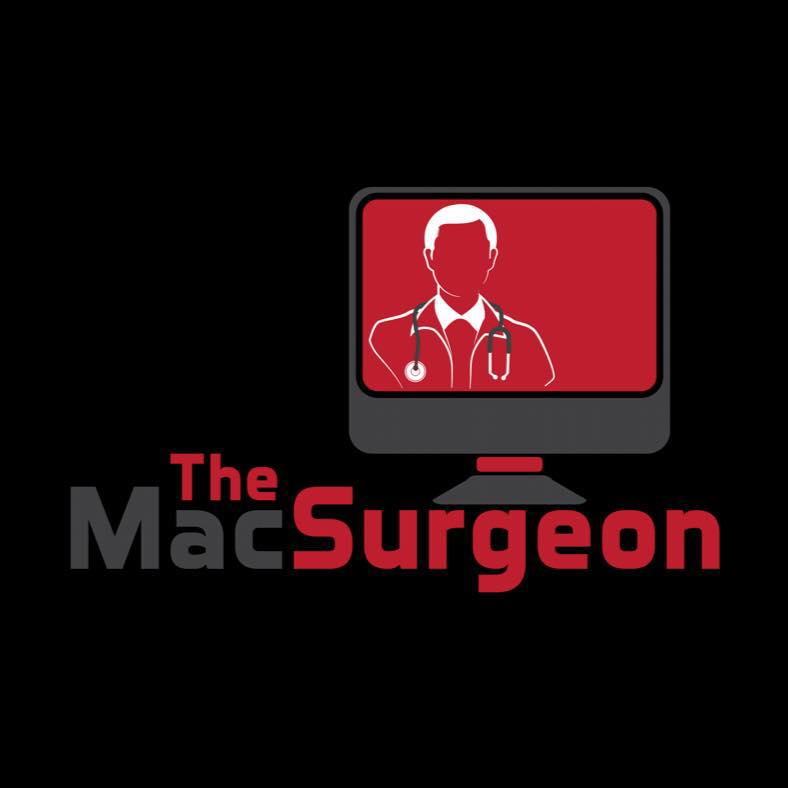

The Mac Surgeon provides reliable Remote Help Desk services for individuals and companies that need additional IT support, overflow ticket handling, or Apple device expertise without hiring full-time staff (powered by AI)
Request Free QuoteThe Mac Surgeon is a remote IT support provider specializing in Apple environments including macOS, iOS, and Apple device management. We work remotely with individuals and businesses that need dependable help desk coverage, overflow ticket support, or Apple expertise to assist their internal IT teams or small business.
Whether your company needs occasional support or consistent ticket coverage, our flexible service model allows organizations to scale their IT support without adding permanent staff.
Remote IT support for employees experiencing technical issues with Apple devices, software, or workplace systems.
When internal IT teams get overwhelmed, we step in to resolve help desk tickets and maintain productivity.
Expert support for macOS, iOS, iPadOS, Apple hardware, and Apple business environments.
Assistance with Apple deployments, troubleshooting, and improving your IT support workflow.
When your support session begins, we send you a secure HelpWire connection link that allows us to start a remote support session.
HelpWire walks you through each permission required for screen sharing and remote assistance.
Once connected our technicians troubleshoot issues in real time while you watch.
Our technicians handle outsourced Tier 1 and Tier 2 help desk tickets for MSPs and businesses that need additional support capacity. We work alongside your internal IT team to resolve issues quickly and keep your support queue under control.
Over time we build custom AI agents specifically trained on your environment. These agents learn from your existing help desk tickets, documentation, internal processes, and knowledge base articles. Our AI model "Mac Surgeon v1.1" is not limited to internal documentation and is trained to search all available resources, both internally and externally.
As the system learns your environment, AI agents begin handling a large percentage of routine Tier 1 support requests automatically. Many organizations see 50–80% of common requests resolved by AI before escalation.
Every AI-generated response appears in a simple approval window where your team can quickly review, approve, or deny the message before it is sent to the client. This keeps you fully in control while still benefiting from powerful automation.